Rüstem Korkmaz
Gazi Üniv. T.E.F. Makine Eð. Böl. Kalýpçýlýk A.B.D.
Kasým 2007, Teknikokullar Ankara
Not: Bu makale, ilk defa
Nisan 2008'de TurkCADCAM.net Portalý'nda yayýnlanmaya baþlamýþtýr.
Özet:
Elektrik, elektronik, bilgisayar, týp ölçü aletleri, tekstil makineleri, saat gibi sektörlerde kullanýlan özel sac metal parçalarýn yüzey kalitelerinin ve ölçü hassasiyetlerinin çok iyi olmasý istenir. Bu yüzden bu gibi önemli parçalar konvansiyonel kesme ile elde edilemediðinden hassas kesme yöntemiyle üretilmektedir.
Hassas kesme kalýplarý normal kesme kalýplarýndan çalýþma sistemi açýsýndan bazý farklýlýklar göstermektedir. Hassas kesme kalýplarýnda kesilecek malzemeyi baský altýnda tutan bir basma çenesi ve baský kuvveti bulunmakta. Ayrýca sac, kesilme esnasýnda zýmba ile itici arasýnda bir baský kuvveti ile sýkýþtýrýlarak kesme iþlemi sacýn ekstrüzyonu þeklinde yapýlmaktadýr. Bu farklýlýðýndan dolayý hassas kesme kalýplarý kendilerine özel üç etkili hassas kesme preslerine baðlanarak hassas kesmeye uygun sac malzemeler kullanýlarak üretim yapýlmaktadýr.
1. Giriþ:
Dar toleranslý ve temiz kemse yüzeyli parçalar elde etmek amacýyla ilk defa saat endüstrisinin geliþmiþ olduðu Ýsviçre'de uygulanan bu yöntemin 1920'li yýllara kadar giden uzun bir araþtýrma geçmiþi vardýr. Ülkemizde yeni tanýnmaya baþlanan hassas kesme batýda yaygýn olarak uygulanmaktadýr (1).
Konvansiyonel kesme ile üretilen parçalarda parlak kesilme þeridi sac kalýnlýðýnýn ancak 1/3'ü kadardýr. Kesilme yüzeyinin diðer bölümünü pürüzlü bir kopma yüzeyi oluþturmaktadýr. Hassas kesme ile üretilmiþ parçalarda ise kesilme yüzeyinin hemen hemen tamamý parlak ve dik açýlýdýr. Dar toleranslý ve temiz kesilme yüzeyli parçalarýn gerektiði üretim alanlarýnda tek iþlemle elde edilebilen hassas kesme parçalarýnýn büyük üstünlüðü vardýr (1). Ayrýca hassas kesme tekniði ile kesme operasyonlarý dýþýnda kabartma, ezme, çevresel ezme ile basamak oluþturma, havþa baþý açma, yarý delme, bükme, ekstrüzyon, form verme gibi operasyonlarda yapýlabilmektedir.
Özel bir kesme yöntemi olan hassas kesme, parçalarýn doðru bir geometri, çatlak veya yýrtýlma içermeyen ve pürüzsüz kesilmiþ kenarlarla herhangi bir ana ikincil operasyona gerek duyulmadan kalýplarla üretildiði ileri ve hassas bir sac þekillendirme yöntemidir. Hassas kesme prosesi þematik olarak Þekil 1'de görülmektedir (2).
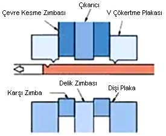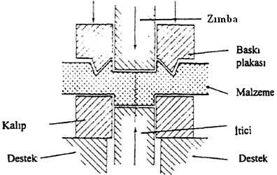 Þekil 1. Hassas kesme iþleminin þematik olarak gösteriliþi (2)
Ýþlem esnasýnda sacýn kesiminden ziyade yüksek basýnç etkisi altýnda ekstrüzyonu söz konusudur. Çünkü alýþýlmýþ kesme iþleminde, parça kýrýlma ve kopma ile ayrýlmaktadýr. Burada ise ilke olarak farklýlýk söz konusudur ve yöntem sayesinde hassas sac parçalarý kýrýlma kenarý karakteristiklerini göstermeden ve tek bir operasyon ile elde edilmesi mümkün olabilmektedir. Ýþlem hem kesme hem de delme operasyonu olarak uygulanabilmektedir. Örneðin, düzgün geometrik olmayan bir çevre kesimi ile belirli sayýdaki delikler iyi bir biçimde elde edilebilmekte ve bükme, kabartma vb. bazý ek þekillendirmelerde uygulanabilmektedir (3).
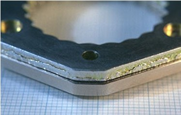
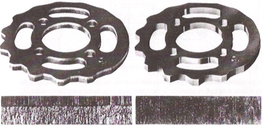 Þekil 2. Normal ve Hassas Kesme Yöntemi ile üretilmiþ parçalar (4)
Hassas kesme parça büyüklüðü ve geometrisi bakýmýndan en küçük mikromekanik, elektronik ve hassas optik parçalarýndan, en büyük otomobil, tarým, araçlarý ve havacýlýk endüstrisi parçalarýna kadar büyük bir spektrum çeþitliliðine sahiptir. Bu yöntemle kalýnlýðý 20 mm'den dýþ boyutlarý yaklaþýk 1000 mm'ye kadar olan parçalar üretilebilmektedir (2).
Hassas kesme ile konvansiyonel kesmeye göre daha fazla hassasiyet ve üstün bir düzgünlük saðlanmaktadýr. Sac parçalarda, boyut ve sac kalýnlýðýna baðlý olarak, 0,05 - 0,8 mm arasýnda deðiþen bir toplam tolerans elde edilmektedir. Optimum koþullar altýnda bu metotla, parça yüzeyi ile 90°'lik açý yapacak þekilde dik olarak kesilmiþ kenarlar elde edilebilmekte ve ortalama pürüzlülük deðeri (Ra) minimum 0.4 -1.5 mikronlara varan yüzeylere ulaþýlabilmektedir. Elde edilen parçalar ise pürüzsüz ve hatasýzdýr; kenarlarda ise herhangi bir çatlak görülmemekte ve kesilen kenarlarýn % 100'ünde metal yýrtýlmasý oluþmaktadýr (2). Soðuk olarak þekil deðiþimine zorlanan malzeme sertleþerek mukavemet deðerlerinin artmasýna neden olur. Bu konuda yapýlan incelemelerde dýþ yüzeyde kesme sonrasýnda orijinal sertliðin %100 dolayýnda arttýðý görülmüþtür (4).
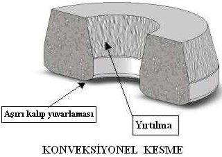
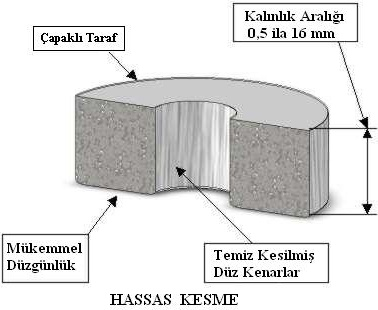
Þekil 3. Hassas Kesme Yöntemi ve Normal Kesme Yönteminin parça üzerindeki sonuçlarý.
Her kesilen parçanýn kesme zýmbasý tarafýndaki kesme kenarýnda kesme çapaðý denilen çýkýntý bulunur. Bu çapaðýn büyüklüðü kalýp kesme kenarlarýnýn durumuna ve kesilen malzemenin özelliðine baðlýdýr. Kesme kenarlarý keskin yeni kalýpla yapýlan kesmede çapak yüksekliði 0,01 - 0,08 mm kadardýr. Kalýp kullaným süresi uzadýkça kesme kenarlarýnýn körelmesiyle çapak yüksekliði artarak 0,1 - 0,3 mm deðerine doðru yükselir. Kesmede oluþan çapak parçalarýn durumuna göre yüzey taþlama, dolaplama, vibratörlü tamburlama veya elektrokimyasal yöntemlerle giderilebilir (4).
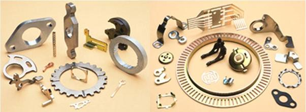
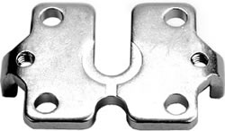
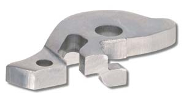
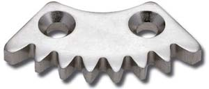
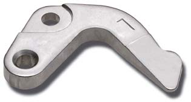
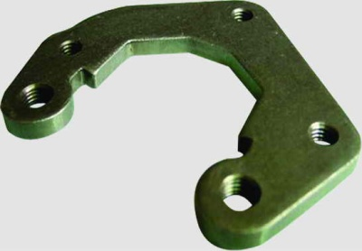
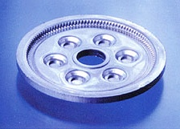
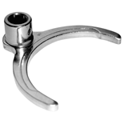
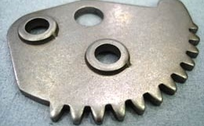
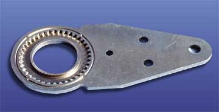
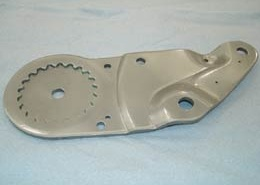
Þekil 4. Hassas Kesme Yöntemi ile üretilmiþ parçalar.